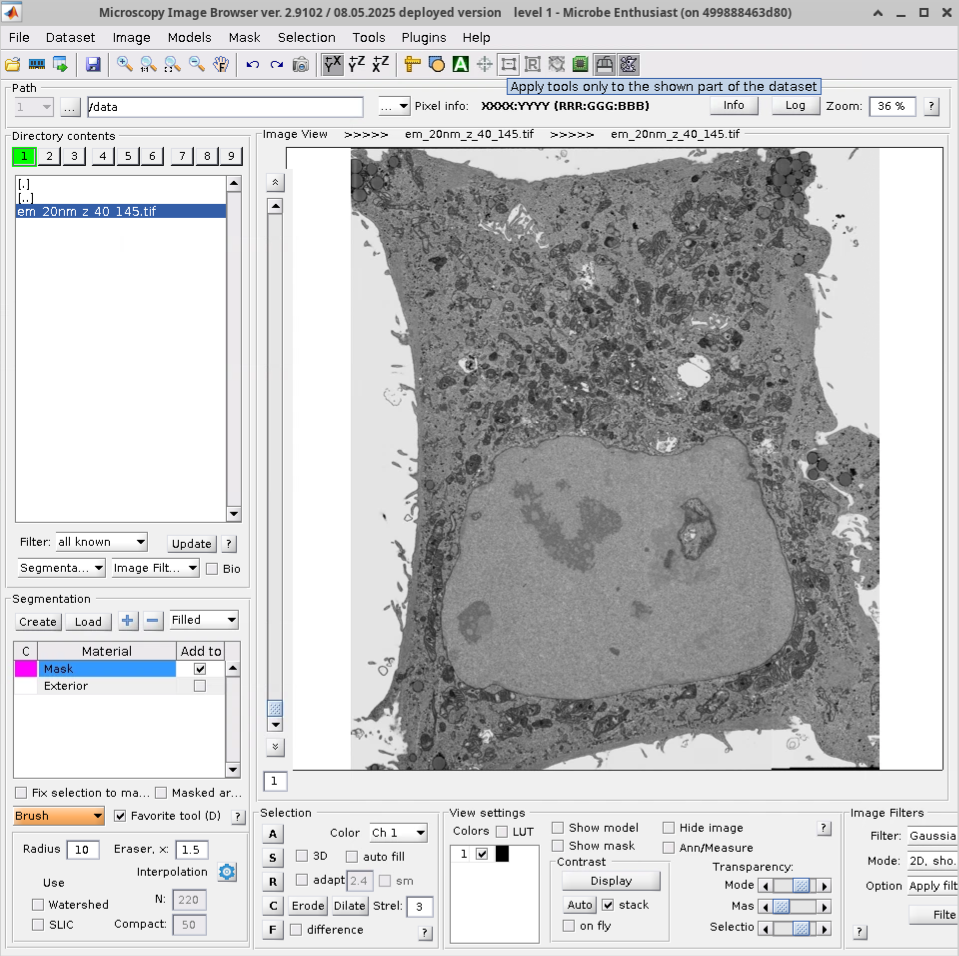

MIB2
Introduction
The Microscopy Image Browser (MIB) is a MATLAB-based software package for processing, segmentation and visualisation of 2-4 dimensional light and electron microscopy datasets. It includes a built-in tool for training and applying deep convolutional networks to image segmentation. The second major release of the program, MIB2, has been developed since 2010 by Ilya Belevich and other researchers at the Institute of Biotechnology at the University of Helsinki.
Info
MIB2 is frequently used in conjunction with the SAM2 model for promptable visual segmentation in images and videos. SAM2 does not currently work with our MIB2 container due to Python version incompatibility, but we are looking to support it in the future.
Using MIB2
Prerequisites: MIB2 is a graphical application that requires a local or remote display server such as X11 to render its interface. MIB2 does not require a GPU, but some segmentation features may leverage GPU acceleration if you have an NVIDIA card.
Warning
While you don't need your own MATLAB license to use MIB2, by using the application you agree to the MATLAB Compiler Runtime libraries licence and the external licenses listed on the MIB website.
Running the Container
MIB2 can be started by pulling and running the container using Apptainer:
apptainer run \
--nv \
--env DISPLAY=$DISPLAY \
--bind /tmp/.X11-unix:/tmp/.X11-unix \
docker://quay.io/rosalindfranklininstitute/mib-container
--nv option. If image data you want
to access is not in your home directory, you will need to mount the data
location to the container by adding --bind /path/to/data:/data to the
above command.
For those using Docker, the host X server must be made accessible
to containers by first running xhost +local: from the command
line (xhost + if you are using a remote connection). Then:
docker run \
--gpus all \
-v /path/to/data:/data \
-e DISPLAY=$DISPLAY \
-v /tmp/.X11-unix:/tmp/.X11-unix \
--device=/dev/dri:/dev/dri \
quay.io/rosalindfranklininstitute/mib-container
--gpus all may be omitted if you don't have a NVIDIA GPU.
By default, Docker does not make any directories on your system
available to the container, so it is necessary to mount a directory
/path/to/data containing your dataset, as in
-v /path/to/data:/data (the data will then appear
appear under /data in MIB2).
Info
When closing MIB2, the terminal window you started the container from
may hang. Press CTRL+C three times or close the
terminal window to exit the program completely.
Interacting with the application
Once MIB2 starts, you can navigate to your data by typing the path in the
toolbar or by clicking through the directory tree in the left panel. Note that
most directories shown refer to locations inside the container; use the --bind
(Apptainer) or -v (Docker) options described above to make your data accessible.
To load an image, double click on its file name in the directory tree. MIB2 supports loading and saving images in TIF, Amira Mesh, JPG, Fiji BigDataViewer, HDF5, MRC, NRRD and PNG formats. Below shows an example of electron microscopy data1 loaded in MIB2.
 MIB2 Application with Sample Data from the CLEM-Reg Paper1.
MIB2 can also load images from remote sources via
the File>Import image menu.
To learn about using MIB2's segmentation and visualisation features, consult the documentation and video tutorials linked in the Useful Links section below. The MIB2 website includes detailed video tutorials for many common workflows and features.
Tip
MIB2 has a large number of keyboard shortcuts which can be viewed
from File > Preferences.
Troubleshooting and Support
Known Issues
SAM2 Integration: The current container has a Python version incompatibility that prevents SAM2 integration. We are working on resolving this in a future release.
Getting help
If you encounter problems with the MIB2 container, create an issue on the container GitHub repository. Please share as much information as you can regarding your host system (e.g., operating system, container runtime), the commands you are trying to run as well as any error messages.
Version and license information
The RFI container provides MIB2 version 2.9102 released 08.05.2025.
The container is distributed under a GPL-3.0 License. By using MIB2, you agree to the MATLAB Compiler Runtime libraries licence and the external licenses listed on the MIB website.
When using MIB2, consider citing the original2 MIB publication. For those using the Deep Learning features, there is the additional DeepMIB paper3.
🔗 Useful Links
- MIB2 Website
- MIB2 Documentation
- MIB2 Features and Video Tutorials
- Electron Microscopy Unit at the University of Helsinki
- SAM2 by facebookresearch
-
Krentzel, D. et al., Nature Methods 22, 1923–1934 (2025) ↩↩
-
I. Belevich et al., PLoS Biology, 14(1):e1002340 (2016) ↩
-
I. Belevich and E. Jokitalo, PLoS Comput Biol., 17(3):e1008374 (2021) ↩